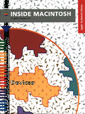

Legacy Document
Important: The information in this document is obsolete and should not be used for new development.
Important: The information in this document is obsolete and should not be used for new development.


Inside Macintosh: Devices
Inside Macintosh: Devices describes how to write software that interacts with built-in and peripheral hardware devices. With this book, you'll learn how to
You need this book if you want to write a Macintosh device driver. You also need this book if you want to write an application that directly addresses the Apple Desktop Bus, NuBus cards, or the Power Manager. Because many Macintosh managers interact with the Device Manager, this book provides useful information for writing and debugging low-level software.
- write and install your own device drivers, desk accessories, and Chooser extensions
- communicate with device drivers using the Device Manager
- access expansion cards using the Slot Manager
- control SCSI devices using the SCSI Manager
- communicate directly with Apple Desktop Bus devices
- use the Power Manager in battery-powered computers
- communicate with serial devices using the Serial Driver
If you are designing an application or device driver that addresses hardware, you should also consult Guide to the Macintosh Family Hardware, second edition. For information about processor-direct slot (PDS) and NuBus expansion cards, read Designing Cards and Drivers for the Macintosh Family, third edition.
Availability: Click below to obtain Inside Macintosh: Devices in any of the following formats.

Book Contents
- Figures, Tables, and Listings
- Preface - About This Book
- Chapter 1 - Device Manager
- Chapter 2 - Slot Manager
- Chapter 3 - SCSI Manager
- Chapter 4 - SCSI Manager 4.3
- Chapter 5 - ADB Manager
- Chapter 6 - Power Manager
- Chapter 7 - Serial Driver
- Glossary